Modul Variasi — KedaiPOS
Cara memilih variasi produk semasa jualan dan cara mengurus senarai variasi itu sendiri
Versi 1.0
Kemas kini 17 Ogos 2026
KedaiPOS ialah sistem jualan (Point of Sale) untuk kedai makan. Modul variasi ialah bahagian yang membenarkan satu produk dijual dalam beberapa bentuk berbeza — contohnya Nasi Lemak dengan lauk ayam goreng, atau Teh Tarik saiz besar dengan ais.
Setiap pilihan boleh menambah atau mengurangkan harga. Sistem mengira harga akhir secara automatik, mencatat pilihan itu pada baris troli, dan mencetaknya pada resit supaya dapur tahu apa yang perlu disediakan.
Panduan ini dibahagikan kepada dua bahagian:
http://localhost/claude-learn1/Skrin utama terbahagi kepada tiga bahagian yang berkaitan dengan modul variasi:
| Bahagian | Lokasi | Fungsi |
|---|---|---|
| Bar atas | Paling atas | Mengandungi butang ⚙️ Variasi (urus variasi) dan 📜 Sejarah |
| Panel produk | Kiri dan tengah | Memaparkan kad produk; produk bervariasi ditanda lencana Ada pilihan |
| Panel troli | Kanan | Memaparkan setiap baris jualan berserta pilihan variasi yang dipilih |
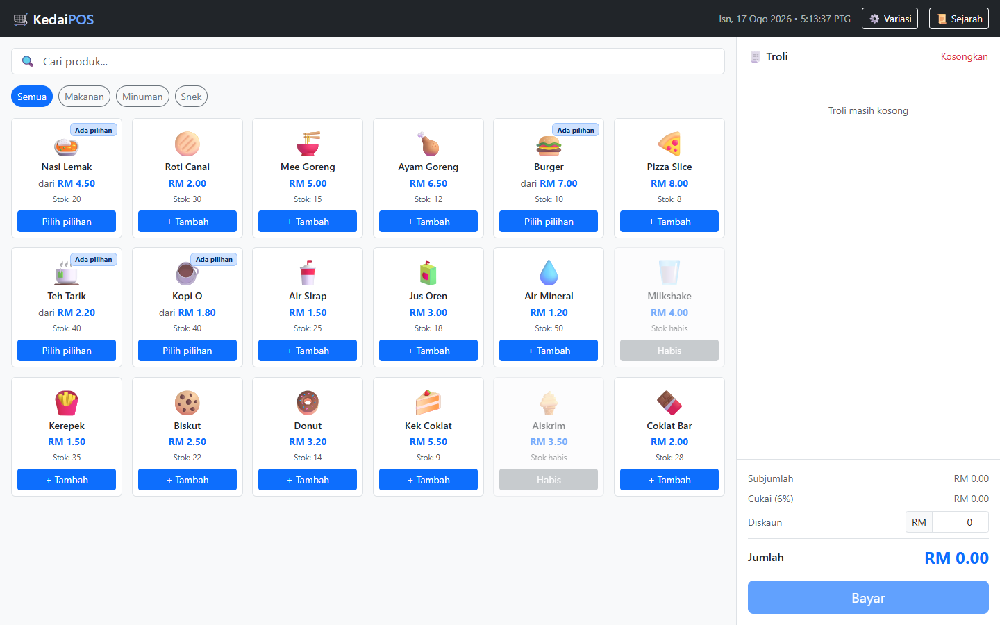
Maklumat penting pada skrin ini:
Sebelum menekan apa-apa, lihat kad produk. Produk biasa terus masuk ke troli apabila ditekan. Produk bervariasi pula membuka tetingkap pilihan terlebih dahulu.
Contoh: kad Nasi Lemak memaparkan lencana Ada pilihan, harga dari RM 4.50, dan butang Pilih pilihan.
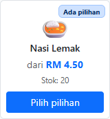
Pada data asal sistem, empat produk mempunyai variasi:
| Produk | Harga asas | Kumpulan variasi |
|---|---|---|
| 🍛 Nasi Lemak | RM 4.50 | Lauk, Kepedasan, Tambahan |
| 🍔 Burger | RM 7.00 | Jenis Patty, Tambahan |
| 🍵 Teh Tarik | RM 2.20 | Saiz, Suhu, Tambahan |
| ☕ Kopi O | RM 1.80 | Saiz, Paras Gula |
Tekan kad produk. Tetingkap pilihan akan terbuka dengan nama produk, harga asas, dan baki stok pada bahagian atas.
Contoh: menekan Nasi Lemak membuka tetingkap bertajuk Nasi Lemak, dengan subtajuk Harga asas RM 4.50 • Stok 20, dan tiga kumpulan pilihan — Lauk, Kepedasan, dan Tambahan.
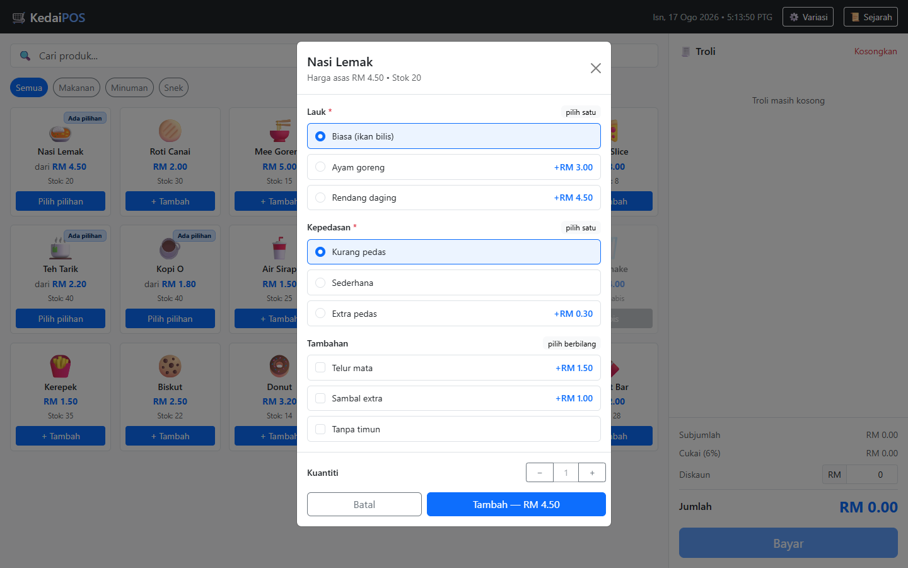
Setiap kumpulan mempunyai dua penanda yang perlu difahami:
| Penanda | Maksud |
|---|---|
Bintang merah * selepas nama kumpulan | Kumpulan itu wajib — mesti ada sekurang-kurangnya satu pilihan |
| Lencana pilih satu | Hanya satu pilihan boleh dipilih (bulatan) |
| Lencana pilih berbilang | Boleh pilih seberapa banyak pilihan (kotak semak) |
| +RM 3.00 di sebelah kanan pilihan | Harga tambahan bagi pilihan itu |
| −RM 0.20 di sebelah kanan pilihan | Potongan harga bagi pilihan itu |
Tekan pilihan yang dikehendaki pelanggan bagi setiap kumpulan bertanda *.
Harga pada butang biru di bawah akan berubah serta-merta.
Contoh: pilih Ayam goreng (+RM 3.00) dalam kumpulan Lauk dan Extra pedas (+RM 0.30) dalam kumpulan Kepedasan. Butang bertukar menjadi Tambah — RM 7.80, iaitu RM 4.50 + RM 3.00 + RM 0.30.
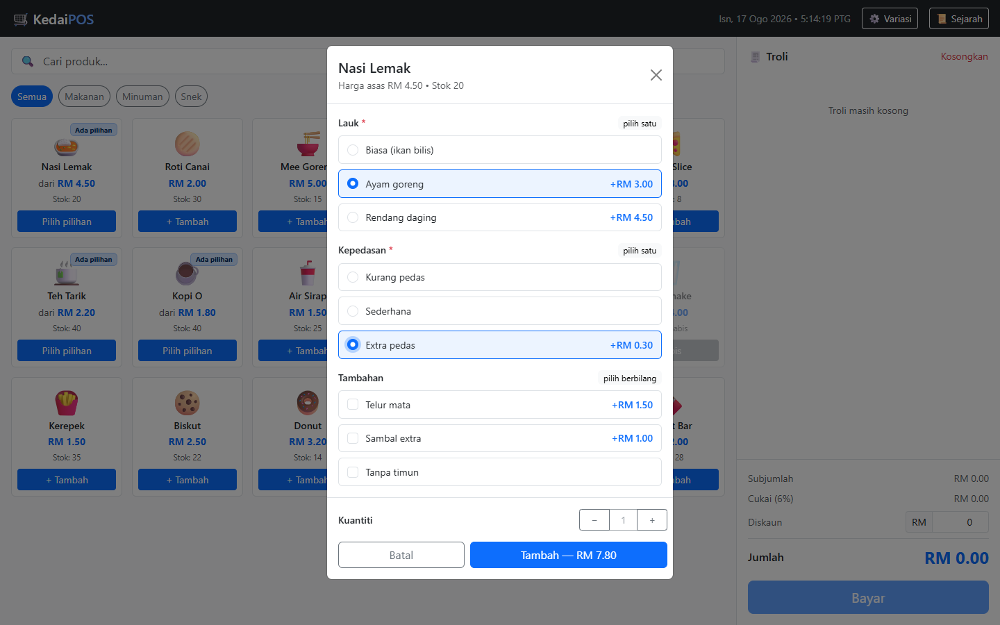
Kumpulan jenis pilih berbilang membenarkan lebih daripada satu pilihan pada masa yang sama. Tekan setiap kotak semak yang dikehendaki; tekan sekali lagi untuk membatalkannya.
Contoh: dalam kumpulan Tambahan, tandakan Telur mata (+RM 1.50) dan Sambal extra (+RM 1.00). Butang kini memaparkan Tambah — RM 10.30.
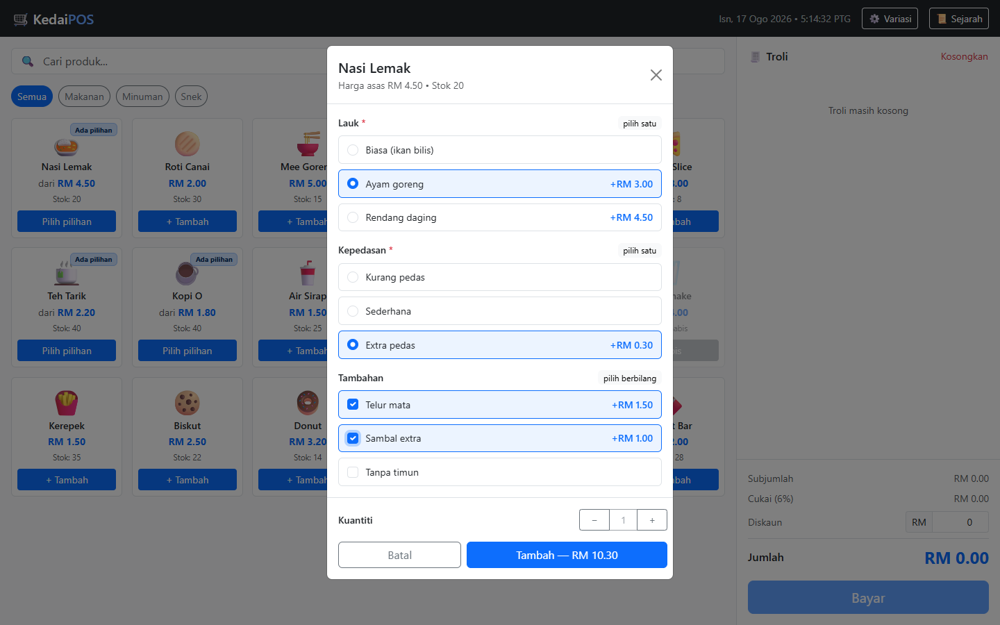
*, jadi
ia boleh dibiarkan kosong. Pilihan seperti Tanpa timun berharga RM 0.00 —
ia hanya arahan kepada dapur, bukan caj.
Guna butang − dan + di bahagian bawah tetingkap untuk menetapkan bilangan unit dengan kombinasi pilihan yang sama.
Contoh: tekan + sekali sehingga kuantiti menjadi 2. Butang bertukar menjadi Tambah — RM 20.60, iaitu RM 10.30 × 2.
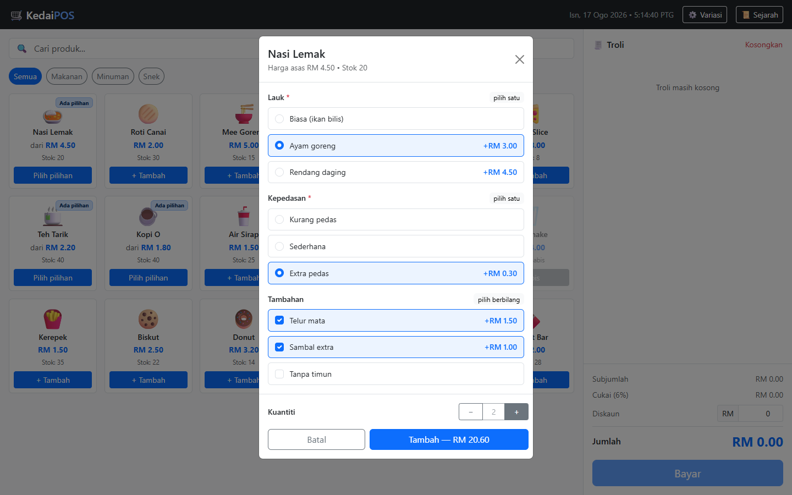
Tekan butang Tambah — RM 20.60. Tetingkap akan tertutup dan barisan baharu muncul dalam troli.
Baris troli memaparkan tiga maklumat: nama produk, senarai pilihan dalam tulisan condong,
dan pengiraan harga seunit × kuantiti.
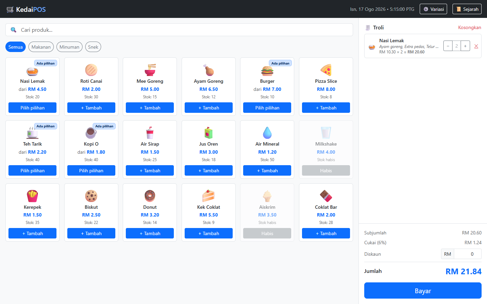
… dalam troli. Senarai penuh tetap dicetak pada resit.
Setiap kombinasi pilihan yang berlainan menjadi baris troli tersendiri, walaupun produknya sama. Ini membolehkan harga dan arahan dapur kekal betul bagi setiap pesanan.
Contoh: tambah Nasi Lemak sekali lagi, kali ini dengan Rendang daging (+RM 4.50) dan Sederhana. Troli kini mempunyai dua baris Nasi Lemak — satu RM 10.30 seunit, satu lagi RM 9.00 seunit.
Jika anda menambah produk dengan kombinasi pilihan yang sama persis, sistem tidak membuat baris baharu. Ia hanya menambah kuantiti pada baris sedia ada.
Contoh: tambah semula Nasi Lemak dengan Ayam goreng, Extra pedas, Telur mata, Sambal extra. Baris pertama bertukar daripada kuantiti 2 kepada 3, dan jumlahnya menjadi RM 30.90.
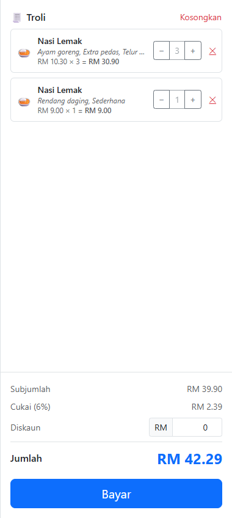
Selesaikan jualan seperti biasa: tekan Bayar, masukkan wang yang diterima, kemudian tekan Sahkan Bayaran. Resit akan terbuka.
Pada resit, pilihan variasi dicetak dalam baris kecil di bawah nama produk. Bahagian dapur dan pelanggan boleh mengesahkan pesanan daripada baris ini.
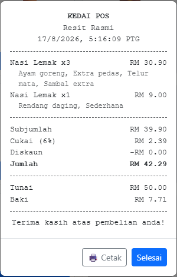
Contoh di atas: Nasi Lemak x3 dengan Ayam goreng, Extra pedas, Telur mata,
Sambal extra berjumlah RM 30.90, dan Nasi Lemak x1 dengan Rendang
daging, Sederhana berjumlah RM 9.00. Cukai 6% dikira ke atas subjumlah selepas variasi.
Tekan 📜 Sejarah pada bar atas untuk melihat transaksi lepas. Setiap rekod menyenaraikan item berserta pilihan variasi dalam kurungan.
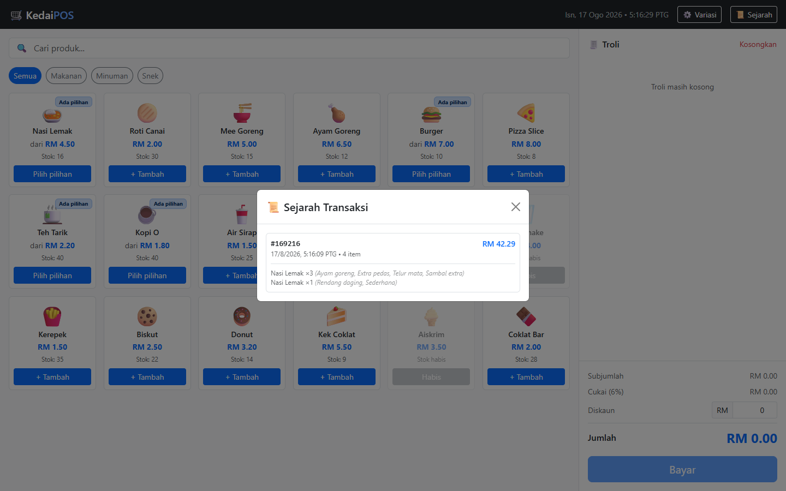
Tekan butang ⚙️ Variasi pada bar atas. Tetingkap ⚙️ Urus Variasi Produk akan terbuka.
| Lajur | Kandungan |
|---|---|
| Kiri | Senarai semua produk, dengan kiraan N kumpulan atau label tiada variasi |
| Kanan | Editor bagi produk yang sedang dipilih — nama produk, harga asas, dan semua kumpulan variasinya |
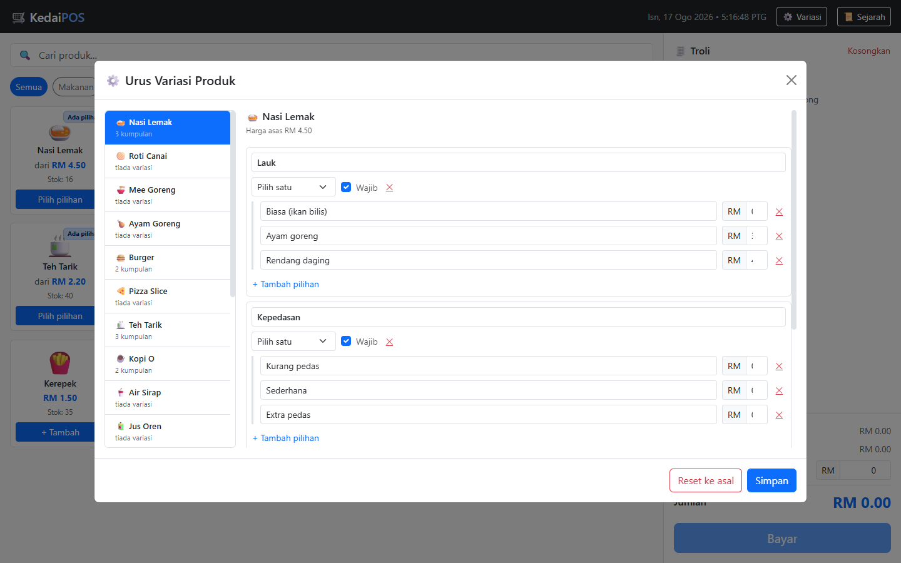
Tekan nama produk pada lajur kiri. Editor di sebelah kanan akan bertukar kepada produk itu.
Contoh: tekan 🫓 Roti Canai. Kerana produk ini belum mempunyai variasi, editor memaparkan mesej Tiada variasi. Produk ini terus masuk troli bila ditekan.
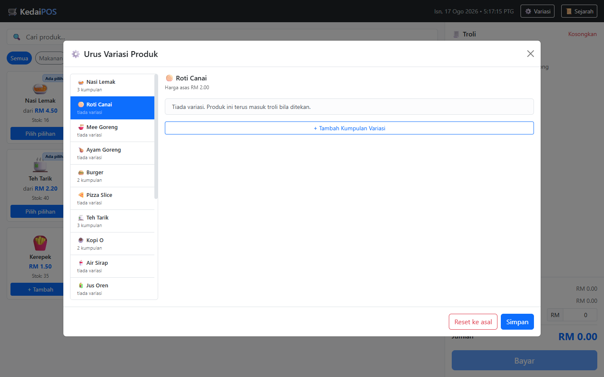
Tekan butang + Tambah Kumpulan Variasi di bahagian bawah editor. Satu kumpulan baharu akan muncul dengan nilai lalai: nama Kumpulan baharu, jenis Pilih satu, kotak Wajib bertanda, dan satu pilihan bernama Pilihan 1 berharga RM 0.
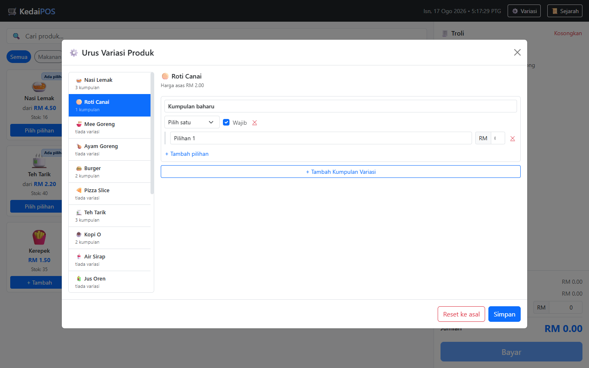
Tetapkan tiga perkara pada baris atas kumpulan:
| Medan | Fungsi |
|---|---|
| Nama kumpulan | Tajuk yang dilihat juruwang, contohnya Jenis Roti atau Saiz |
| Senarai Pilih satu / Pilih berbilang | Menentukan sama ada pilihan dipaparkan sebagai bulatan atau kotak semak |
| Kotak Wajib | Jika bertanda, juruwang mesti memilih sekurang-kurangnya satu pilihan |
Contoh: tukar nama kumpulan kepada Jenis Roti, kekalkan Pilih satu, dan kekalkan kotak Wajib bertanda.
Setiap pilihan mempunyai dua medan: nama pilihan di kiri, dan harga tambahan dalam kotak RM di kanan. Tekan + Tambah pilihan untuk menambah baris pilihan baharu.
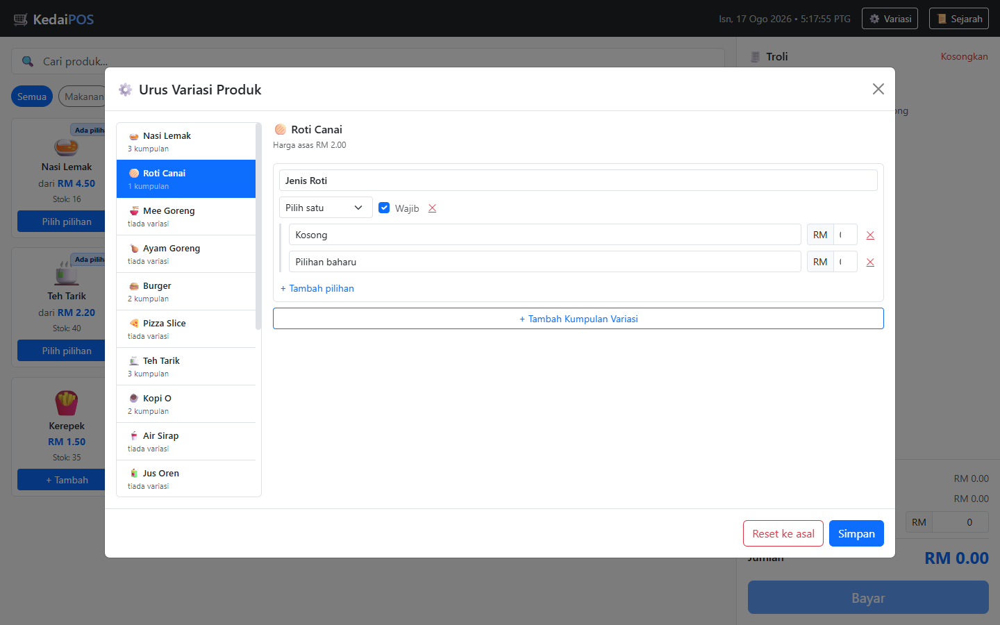
Contoh: bina kumpulan Jenis Roti dengan tiga pilihan.
| Nama pilihan | Harga tambahan |
|---|---|
| Kosong | 0 |
| Telur | 1.50 |
| Bawang | 1.00 |
-0.20.
Ulang + Tambah Kumpulan Variasi untuk kumpulan kedua, kemudian tukar senarai jenis kepada Pilih berbilang. Juruwang kemudiannya boleh memilih lebih daripada satu pilihan dalam kumpulan itu.
Contoh: bina kumpulan Kuah dengan jenis Pilih berbilang dan kotak Wajib bertanda, mengandungi Kuah dhal (0), Kuah kari ayam (0.50) dan Sambal (0.50).
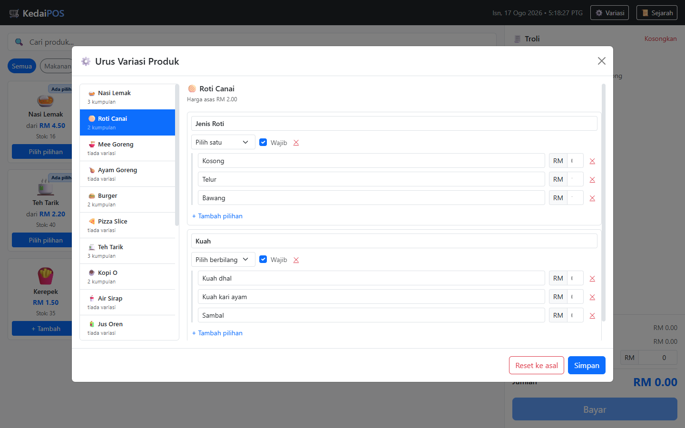
Tekan butang Simpan. Sistem menyemak semua produk terlebih dahulu, dan menolak simpanan jika ada medan yang tidak lengkap.
Contoh ralat: jika nama kumpulan dibiarkan kosong, mesej Kumpulan variasi dalam "Roti Canai" tiada nama muncul di bahagian bawah skrin dan tetingkap kekal terbuka.
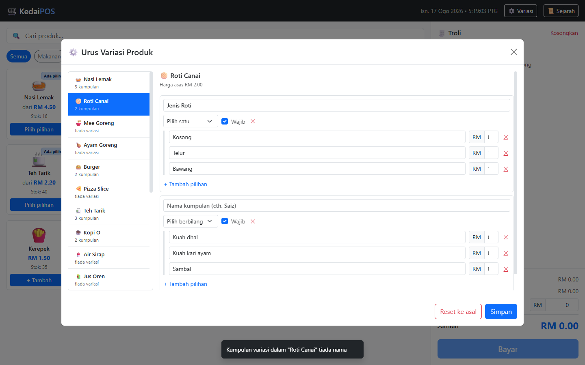
Tiga pemeriksaan yang dilakukan sebelum simpanan diterima:
| Pemeriksaan | Mesej yang dipaparkan |
|---|---|
| Nama kumpulan kosong | Kumpulan variasi dalam "produk" tiada nama |
| Kumpulan tanpa sebarang pilihan | Kumpulan "nama" dalam "produk" tiada pilihan |
| Nama pilihan kosong | Ada pilihan tanpa nama dalam kumpulan "nama" |
Betulkan medan yang disebut, kemudian tekan Simpan semula. Mesej Variasi disimpan akan muncul, tetingkap tertutup, dan kad produk dikemas kini serta-merta.
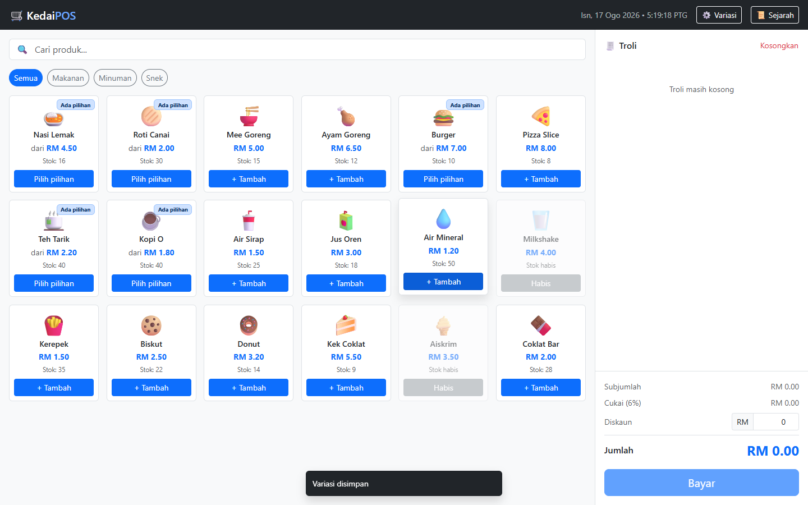
Tekan kad produk yang baru diubah untuk mengesahkan variasinya betul.
Contoh: menekan Roti Canai kini membuka tetingkap dengan dua kumpulan. Kumpulan Jenis Roti sudah terpilih Kosong secara automatik, tetapi kumpulan Kuah masih kosong — jadi butang bawah dilumpuhkan dan bertukar menjadi Sila pilih pilihan wajib.
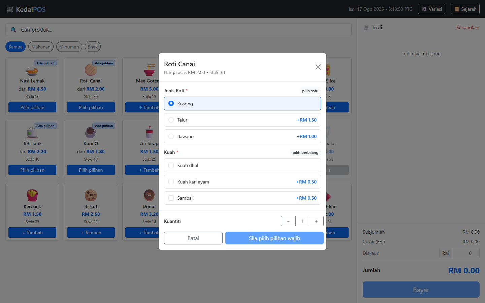
Selepas Kuah dhal dan Sambal ditandakan, butang menjadi aktif dan memaparkan Tambah — RM 2.50, iaitu RM 2.00 + RM 0.00 + RM 0.50.
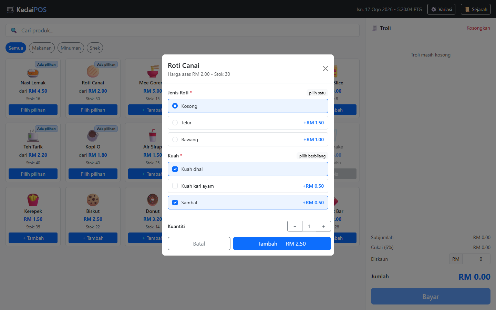
*
yang belum mempunyai sebarang pilihan bertanda.
Dalam panel ⚙️ Variasi, setiap baris pilihan dan setiap kepala kumpulan mempunyai butang ✕ merah.
Contoh: membuang pilihan Bawang meninggalkan Kosong dan Telur dalam kumpulan Jenis Roti.
Butang Reset ke asal memulihkan senarai variasi kepada tetapan asal sistem bagi semua produk sekali gus.
Tekan Reset ke asal, kemudian tekan OK pada soalan pengesahan Reset semua variasi kepada tetapan asal? Perubahan tersimpan akan hilang.
Mesej Variasi direset kepada asal akan muncul. Dalam contoh ini, Roti Canai kembali berlabel tiada variasi dan variasi asal Nasi Lemak dipaparkan semula.
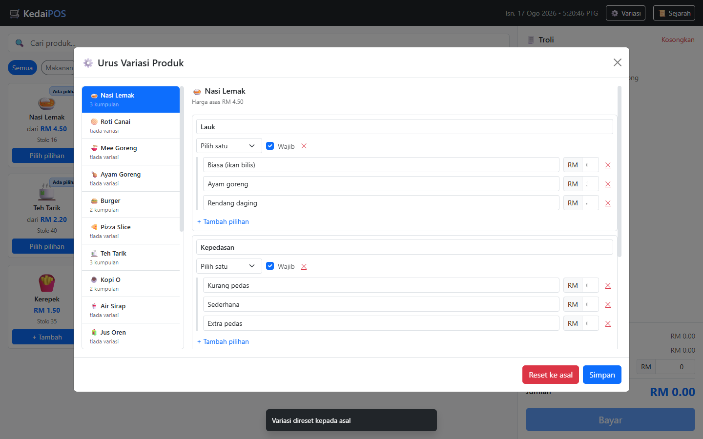
Extra pedas,
Tanpa ais) supaya juruwang tidak perlu menterjemah pesanan.-0.20 untuk pilihan yang memberi potongan,
contohnya Tanpa ais pada Teh Tarik.| Masalah | Sebab | Penyelesaian |
|---|---|---|
| Butang bawah tertulis Sila pilih pilihan wajib dan tidak boleh ditekan | Ada kumpulan bertanda * yang belum dipilih |
Tandakan sekurang-kurangnya satu pilihan dalam setiap kumpulan bertanda * |
| Menekan kad produk terus masuk troli tanpa tetingkap pilihan | Produk itu tiada variasi | Tambah kumpulan variasi melalui ⚙️ Variasi (Langkah 13) |
| Mesej Stok "Nasi Lemak" tidak mencukupi | Semua variasi produk berkongsi kolam stok yang sama | Kurangkan kuantiti, atau kemas kini stok produk |
| Troli menunjukkan dua baris untuk produk yang nampak sama | Kombinasi pilihannya berbeza | Bandingkan baris kecil condong di bawah nama produk |
Senarai pilihan dalam troli terpotong dengan … |
Ruang panel troli terhad | Rujuk resit atau 📜 Sejarah untuk senarai penuh |
| Perubahan variasi hilang selepas tetingkap ditutup | Butang Simpan tidak ditekan | Tekan Simpan sebelum menutup tetingkap |
| Mesej Kumpulan "..." tiada pilihan semasa menyimpan | Kumpulan itu tiada baris pilihan | Tekan + Tambah pilihan, atau buang kumpulan itu dengan ✕ |
| Variasi baharu tidak kelihatan pada komputer lain | Variasi disimpan dalam storan pelayar setempat | Ulang tetapan pada komputer berkenaan |
| Semua variasi tersuai hilang | Butang Reset ke asal telah ditekan | Bina semula variasi — reset tidak boleh diundur |